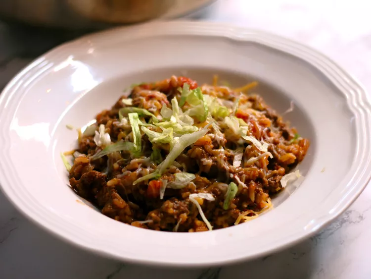

Home
Taco Skillet

Easy taco skillet bake that uses only one pan.
This recipe can be made for under $10!
Ingredients
- 1 pound ground beef
- 1 onion, chopped
- 1 (14.5 ounce) can diced tomatoes
- 2 cups water
- 1 cup converted rice
- 1 (1 ounce) package taco seasoning
- 1 cup shredded Mexican cheese blend
- 1 cup shredded lettuce
Step-by-Step
- Heat a large skillet over medium heat; cook and stir beef and onion until beef is browned, about 5 minutes.
- Drain. Stir tomatoes, water, rice, and taco seasoning into beef mixture and bring to a boil.
- Reduce heat to medium-low, cover, and simmer until rice is tender, about 25 minutes.
- Top with Mexican cheese blend and lettuce before serving.